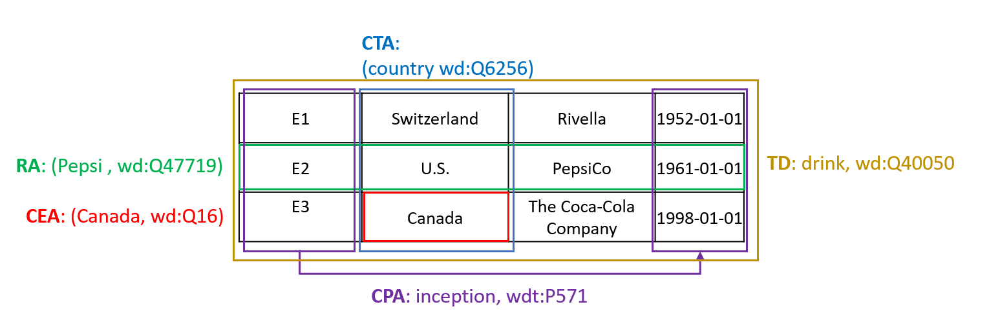
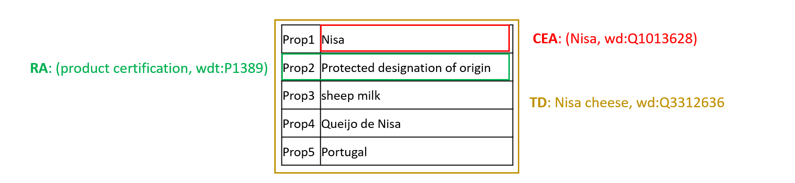

Description
The evaluation of systems regarding accuracy is similar to prior versions of the SemTab. That is, to illustrate the accuracy of the submissions, we evaluate systems on typical multi-class classification metrics as detailed below. In addition, we adopt the "cscore" for the CTA task to reflect the distance in the type hierarchy between the predicted column type and the ground truth semantic type.
Matching Tasks:
- CTA Task: Assigning a semantic type (a DBpedia class as fine-grained as possible) to a column
- CEA Task: Matching a cell to a Wikidata entity
- CPA Task: Assigning a KG property to the relationship between two columns
- TD Task: Assigning a KG class to a table
Table Types:
- Horizontal Tables: A grid where each row represents one entity and each column shares the same semantic type.
- Entity Tables: A list of rows describe an entity/ a thing, where each row represents a property for that entity.
Horizontal Table Example:
Entity Table Example:
Evaluation Criteria
Precision, Recall and F1 Score are calculated: \[Precision = {{correct\_annotations \#} \over {submitted\_annotations \#}}\] \[Recall = {{correct\_annotations \#} \over {ground\_truth\_annotations \#}}\] \[F1 = {2 \times Precision \times Recall \over Precision + Recall}\]
Notes:
- # denotes the number.
- \(F1\) is used as the primary score, and \(Precision\) is used as the secondary score.
- One target cell, one ground truth annotation, i.e., # ground truth annotations = # target cells. The ground truth annotation has already covered all equivalent entities (e.g., wiki page redirected entities); the ground truth is hit if one of its equivalent entities is hit.
Round 1
Datasets
- tBiodiv:

- tBiomed:

Target Knowledge Graph: Wikidata. For offline use Feb 2024
Datasets' Structure
Both tBiodiv and tBiomed consist of two data folds (validation and test) each of which has two table types entity and horizontal tables with the following supported tasks:
Supported Tasks
- Entity tables (tBiomed & tBiodiv): CEA, RA, TD
- Horizontal tables (tBiomed & tBiodiv): CEA, CTA, CPA, RA, TD
Targets Format
- CEA: filename, column id, row id
- CTA: file name, column id
- CPA: filename, subject column id, object column id
- RA: filename, row id
- TD: filename
- Notes:
- - filename is without extention.
- - column, row ids are zero based.
- - targets indicates what to solve in each task.
- - ground truth (gt) indicates the solution of each target.
- - ground truth (gt) format is the same as targets with the QID of corresponding Wikidata entity/class/property.
Participate!
Self Evaluation: You can evaluate your system on your own. Evaluator Code Link
Submission: Are you ready? Then, submit the results of the test set Submission URL